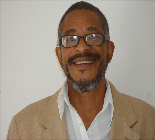

Perfil
Espaço preparado para apresentar a trajetória docente e a relação com o Curso de História da UFRB.
Memorial 20 anos · Perfil docente
Professor(a) do Curso de História da UFRB

Espaço preparado para apresentar a trajetória docente e a relação com o Curso de História da UFRB.
Espaço para disciplinas, projetos, orientações, eventos, pesquisa, extensão e outras atividades.
Espaço para publicações, fotografias, documentos, registros e outros materiais selecionados para o Memorial.
Depoimento de egressa
Gleysa Teixeira Siqueira, egressa do Curso de História da UFRB, compartilha memórias de sua convivência com o professor Liberac e fala sobre sua importância em sua trajetória no Curso de História da UFRB.